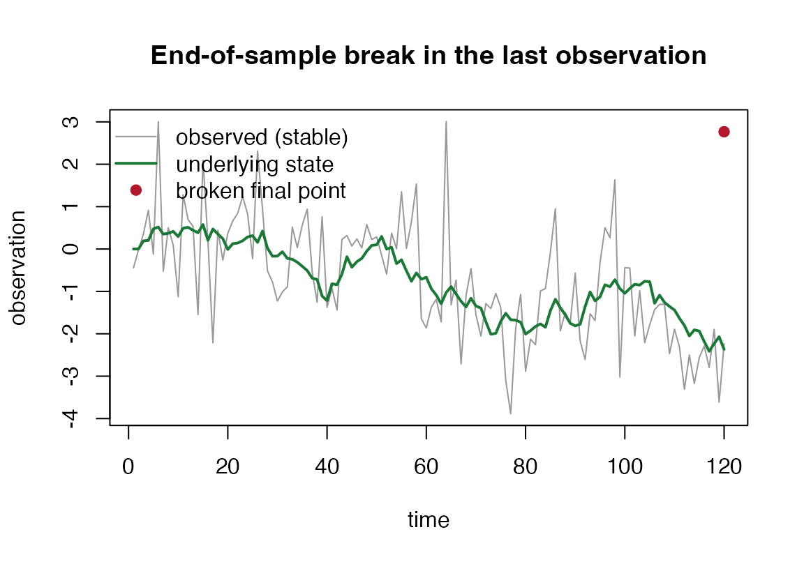

The end-of-sample question
A model is fitted to a series and one more observation arrives. Is it
consistent with the model, or has something just changed? When the
suspect window is tiny – a single point, or a handful – the usual
structural-break tests (Chow, sup-Wald) are undefined, because the
parameters of the post-break regime cannot be estimated from so few
observations. gmm_eos_test() answers the question in
exactly this regime by scoring the last m one-step filter
innovations and calibrating the score, following Andrews (2003).
The statistic
Run the Gaussian-sum filter implied by the operator calculus over the
series. At each step it returns a one-step predictive mean and an
innovation covariance
,
so the standardised innovation
is standard normal under a correct, stable, linear-Gaussian model. The
statistic sums the last m squared standardised innovations,
which a break inflates. Two calibrations are offered.
method = "chisq" refers the statistic to a
distribution on m times the observation dimension degrees
of freedom, exact when the innovations are Gaussian.
method = "andrews" is the distribution-free subsampling
test of Andrews (2003): the statistic’s rank among the in-sample
overlapping m-blocks of the same innovations gives the
p-value, which stays calibrated when the innovations are not
Gaussian.
Two finite-sample cautions apply. The chi-square calibration is exact
when the model is given; with parameters estimated on a short
series it over-rejects (in our validation study, size 0.068 at
against a nominal 0.05, settling to 0.044 by
),
so prefer method = "andrews" when the model is estimated on
little data. The subsampling calibration has a p-value floor of
:
it can reject at level 0.05 only when
,
so very short series cannot reach significance by construction.
A worked example
Take a local-level model, a random walk observed with noise, and simulate a stable series from it.
prior <- gmm(weights = 1, means = list(0), covariances = list(matrix(10)))
dynamics <- list(A = matrix(1), Q = matrix(0.04)) # the state random walk
measurement <- list(C = matrix(1), R = matrix(1)) # the noisy observation
n <- 120
level <- cumsum(c(0, rnorm(n - 1, 0, sqrt(0.04))))
y_stable <- level + rnorm(n, 0, 1)A stable series is not flagged: the last observation sits where the filter expects it.
gmm_eos_test(prior, dynamics, measurement, y_stable, m = 1L, method = "andrews")
#> $statistic
#> [1] 0.08471507
#>
#> $p_value
#> [1] 0.7416667
#>
#> $reject
#> [1] FALSE
#>
#> $method
#> [1] "andrews"
#>
#> $m
#> [1] 1
#>
#> $alpha
#> [1] 0.05
#>
#> $df
#> [1] 1
#>
#> $in_sample_blocks
#> [1] 1.766044e-02 7.410320e-02 2.138462e-01 6.329586e-01 9.924243e-02
#> [6] 6.345792e+00 1.354288e+00 3.474506e-05 1.381687e-01 1.966386e+00
#> [11] 1.065179e+00 9.610185e-02 1.221147e-02 3.210325e+00 3.349713e+00
#> [16] 5.255356e-02 5.582833e+00 2.207502e-01 6.258058e-02 1.342645e-01
#> [21] 3.174151e-01 3.937562e-01 7.611055e-01 1.109351e-01 4.529202e-01
#> [26] 3.049573e+00 3.147259e-02 1.354770e+00 1.411572e+00 1.909825e+00
#> [31] 8.779510e-01 4.315371e-01 5.424833e-01 2.734181e-02 3.735087e-01
#> [36] 7.154852e-01 4.142930e-01 1.392280e+00 7.408216e-01 1.511022e+00
#> [41] 3.564171e-01 9.175154e-01 5.236559e-01 4.576973e-01 1.086018e-01
#> [46] 1.783872e-01 2.341966e-02 3.918791e-01 3.657197e-02 4.569992e-02
#> [51] 4.821698e-02 3.389430e-01 1.603800e-01 4.946401e-05 1.469697e+00
#> [56] 4.670562e-02 1.557927e-01 1.267513e+00 3.828845e+00 3.231373e+00
#> [61] 1.059251e+00 4.542390e-01 1.067619e+00 1.178176e+01 1.219298e+00
#> [66] 1.406117e-01 4.400698e+00 6.630191e-02 1.311029e-01 4.733809e-01
#> [71] 1.034601e+00 1.928178e-02 4.929371e-02 2.028381e-02 3.486807e-02
#> [76] 2.904865e+00 4.455449e+00 7.863426e-03 6.447573e-01 9.680464e-01
#> [81] 1.420674e-02 4.695590e-02 9.422383e-01 7.155413e-01 2.154325e+00
#> [86] 4.545436e+00 7.424340e-01 9.732799e-02 2.295569e-01 4.527878e-01
#> [91] 8.164238e-01 1.281807e+00 2.448807e-03 1.083658e-02 1.315814e+00
#> [96] 2.856131e+00 1.360659e+00 4.822307e+00 5.837624e+00 1.289570e-01
#> [101] 8.127144e-02 1.476293e+00 7.086361e-04 1.292452e+00 3.040179e-01
#> [106] 1.519260e-02 1.279745e-04 8.347572e-05 1.092984e+00 1.115426e-01
#> [111] 4.234188e-01 2.068563e+00 1.985431e-01 9.499030e-01 5.806847e-02
#> [116] 2.158182e-03 1.775648e-01 2.216531e-01 1.372746e+00
#>
#> attr(,"class")
#> [1] "gmm_eos_test"Now copy the series and push the final observation away by five standard deviations of the observation noise.
y_break <- y_stable
y_break[n] <- y_break[n] + 5
gmm_eos_test(prior, dynamics, measurement, y_break, m = 1L, method = "andrews")
#> $statistic
#> [1] 23.19382
#>
#> $p_value
#> [1] 0.008333333
#>
#> $reject
#> [1] TRUE
#>
#> $method
#> [1] "andrews"
#>
#> $m
#> [1] 1
#>
#> $alpha
#> [1] 0.05
#>
#> $df
#> [1] 1
#>
#> $in_sample_blocks
#> [1] 1.766044e-02 7.410320e-02 2.138462e-01 6.329586e-01 9.924243e-02
#> [6] 6.345792e+00 1.354288e+00 3.474506e-05 1.381687e-01 1.966386e+00
#> [11] 1.065179e+00 9.610185e-02 1.221147e-02 3.210325e+00 3.349713e+00
#> [16] 5.255356e-02 5.582833e+00 2.207502e-01 6.258058e-02 1.342645e-01
#> [21] 3.174151e-01 3.937562e-01 7.611055e-01 1.109351e-01 4.529202e-01
#> [26] 3.049573e+00 3.147259e-02 1.354770e+00 1.411572e+00 1.909825e+00
#> [31] 8.779510e-01 4.315371e-01 5.424833e-01 2.734181e-02 3.735087e-01
#> [36] 7.154852e-01 4.142930e-01 1.392280e+00 7.408216e-01 1.511022e+00
#> [41] 3.564171e-01 9.175154e-01 5.236559e-01 4.576973e-01 1.086018e-01
#> [46] 1.783872e-01 2.341966e-02 3.918791e-01 3.657197e-02 4.569992e-02
#> [51] 4.821698e-02 3.389430e-01 1.603800e-01 4.946401e-05 1.469697e+00
#> [56] 4.670562e-02 1.557927e-01 1.267513e+00 3.828845e+00 3.231373e+00
#> [61] 1.059251e+00 4.542390e-01 1.067619e+00 1.178176e+01 1.219298e+00
#> [66] 1.406117e-01 4.400698e+00 6.630191e-02 1.311029e-01 4.733809e-01
#> [71] 1.034601e+00 1.928178e-02 4.929371e-02 2.028381e-02 3.486807e-02
#> [76] 2.904865e+00 4.455449e+00 7.863426e-03 6.447573e-01 9.680464e-01
#> [81] 1.420674e-02 4.695590e-02 9.422383e-01 7.155413e-01 2.154325e+00
#> [86] 4.545436e+00 7.424340e-01 9.732799e-02 2.295569e-01 4.527878e-01
#> [91] 8.164238e-01 1.281807e+00 2.448807e-03 1.083658e-02 1.315814e+00
#> [96] 2.856131e+00 1.360659e+00 4.822307e+00 5.837624e+00 1.289570e-01
#> [101] 8.127144e-02 1.476293e+00 7.086361e-04 1.292452e+00 3.040179e-01
#> [106] 1.519260e-02 1.279745e-04 8.347572e-05 1.092984e+00 1.115426e-01
#> [111] 4.234188e-01 2.068563e+00 1.985431e-01 9.499030e-01 5.806847e-02
#> [116] 2.158182e-03 1.775648e-01 2.216531e-01 1.372746e+00
#>
#> attr(,"class")
#> [1] "gmm_eos_test"The break inflates the statistic and the test rejects. The picture shows why: the broken point falls far outside the band the filter predicts for it.
plot(y_stable, type = "l", col = "grey60", xlab = "time", ylab = "observation",
main = "End-of-sample break in the last observation")
lines(level, col = "#1b7837", lwd = 2)
points(n, y_break[n], pch = 19, col = "#b2182b")
legend("topleft", c("observed (stable)", "underlying state", "broken final point"),
col = c("grey60", "#1b7837", "#b2182b"), lwd = c(1, 2, NA),
pch = c(NA, NA, 19), bty = "n")
Robustness to non-Gaussian noise
The two calibrations agree when the innovations are Gaussian. They
part company when the observation noise is heavy-tailed: the parametric
reference is then mis-specified, while the subsampling test, which
judges the end-of-sample block only against the other blocks of the same
series, keeps its size. The method = "andrews" option is
the one to reach for when normality is in doubt.
Scope
The test is defined for a fitted linear-Gaussian state-space model,
supplied exactly as for gmm_filter(): a single-component
gmm prior, a dynamics list with the
state-transition and process-noise matrices, and a
measurement list with the observation and observation-noise
matrices. The small-m regime (m = 1, 2, 3) is
the point of the test, and m must be smaller than the
series length.